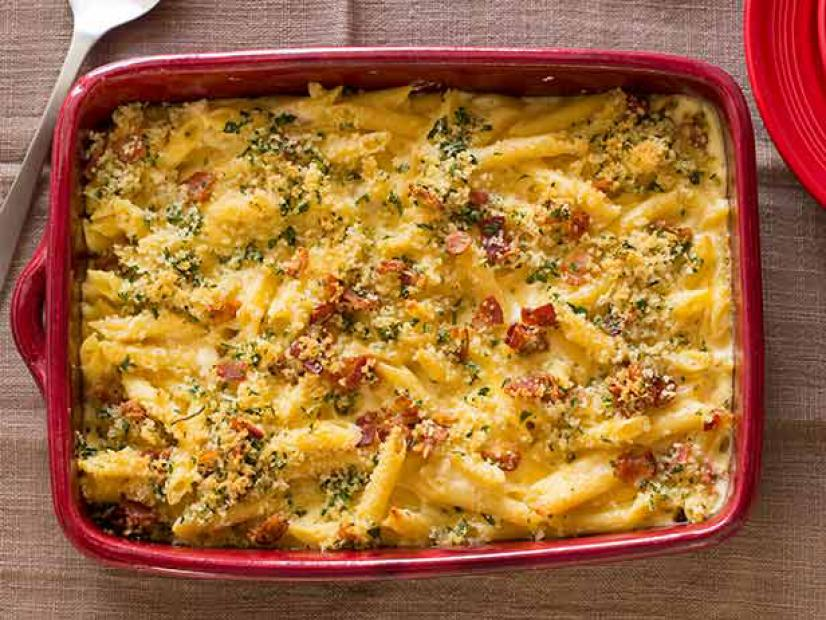

Mac Daddy Mac n' Cheese

Ingredients:
- Shallots (peeled) - 2 shallots
- Garlic Cloves - 2 cloves
- Olive Oil - 1 teaspoon
- Bacon (cooked, diced) - 3 strips
- Bacon Fat - 1 tablespoon
- Flour - 2 tablespoons
- Heavy Cream - 4 cups
- Fresh Thyme (chopped) - 1 teaspoon
- Pepper Jack Cheese (shredded) - 1 cup
- Cheddar Cheese - 2 cups
- Penne Pasta - 1 pound
- Panko Bread Crumbs - 1/2 cup
- Melted Butter - 2 tablespoons
- Fresh Parslet (chopped) - 2 tablespoons
Instructions:
- Preheat oven to 350 degrees F.
- Place shallots and garlic in a small aluminum foil pouch and drizzle with olive oil. Roast 20 to 30 minutes or until tender. Remove from foil and chop.
- In a large saute pan, reheat reserved bacon fat over medium heat. Add roasted shallot and garlic and saute for 1 minute. Add flour and stir for 1 minute. Whisk in heavy cream and thyme. Reduce by a third.
- Stir in cheeses until melted, creamy and thickened. Season to taste with salt and pepper.
- Remove sauce from heat and gently stir in pasta. Place in a 9X13 casserole dish.
- In a small bowl, mix together diced bacon, bread crumbs, butter and parsley.
- Top Mac n Cheese with Panko mixture and bake uncovered at same heat until bubbling and lightly browned on top, 20 to 25 minutes.
Source:
Food Network